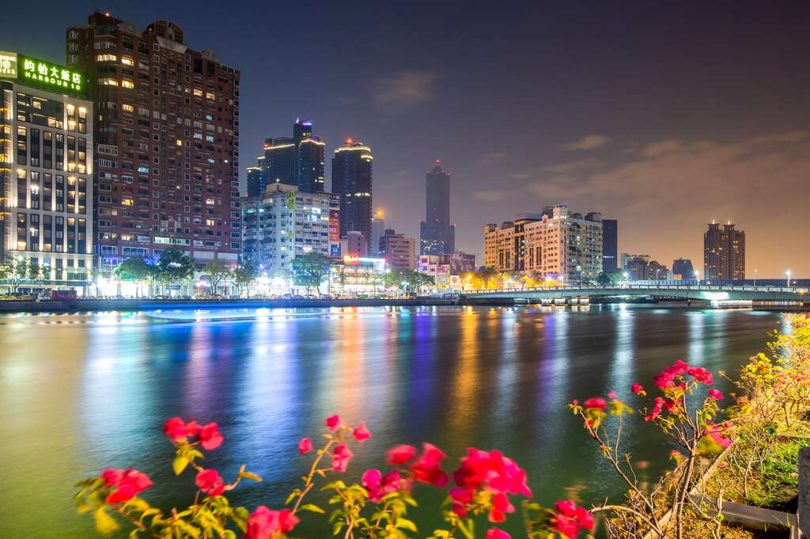

探索高雄
台灣南部最大的城市和主要港口，以愛河和蓮池潭著名，是海洋和工業的中心。以下是高雄著名的景點:

愛河
愛河最初僅是一條淺溪，提供渡船的往來，在日治時期加以疏濬成為運河，扮演著當時交通運輸的重要角色，並定名為「高雄川」，這是愛河第一次有正式的稱謂，但一般人仍習慣稱它作「高雄圳」或「高雄運河」。
蓮池潭
蓮池潭舊稱蓮花潭，位於高雄市左營區東側，南鄰龜山、北接半屏山，潭面面積約42公頃，源於高屏溪。 蓮池潭周邊潭水因遍植荷花，在清領時期就名列鳳山八景，稱「泮水荷香」，現因湖畔半屏山特殊造型與龍虎塔遠近倒映水中，而以「蓮潭夕照」聞名。

旗津島
「旗津」位於高雄市西南端，是一處東南走向的狹長小島。 「旗津」，早期稱為「旗後」，指位居旗山之後的部落。 高雄旗津因所在的地理位置優勢之故，於清朝時期已是通商交易頻繁的岸口，也是高雄地區最早開發的區域。 發展歷史已達百年以上之久的高雄旗津，至今仍然有著許多古色古香的古蹟建築及純樸自然的風俗民情。
西子灣
西子灣，是位於臺灣高雄市西隅的一個風景區，位於在柴山西南端山麓下，南面隔海與旗津島相望，是一個風景天成的灣澳。 最北端傍柴山是一處由平灘和淺沙所構成的海水浴場，以及以夕陽及天然礁石聞名的海灣。